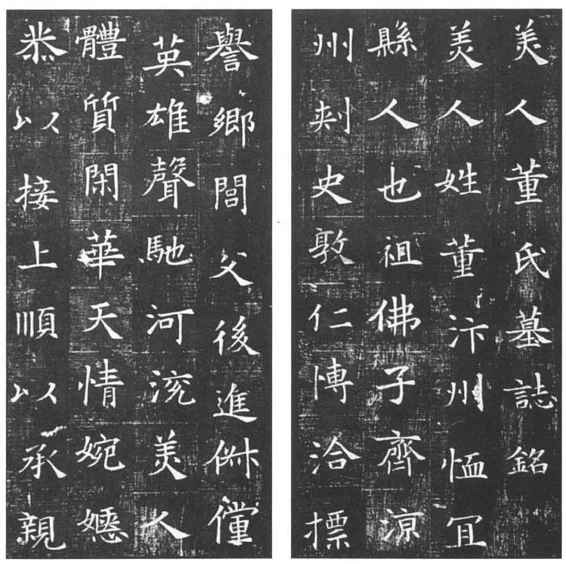

第十二章
古代的碑刻与书法

第一节
古代的碑刻
概说
在石上刊刻以文字为主的东西，用来供阅读识别，是我国特有的一种文化现象。它起源于黄河流域，不久遍及汉族生活地区，还旁及兄弟民族和受我国文化影响的日本和朝鲜半岛等地方。
收集著录这种石刻文字的事情开始于北宋。这是因为到北宋我国已进入成熟的封建地主制社会，学术文化出现前所未有的新局面，研究这种石刻文字之风自随之而兴起。
当时是把这种石刻文字和青铜器及其铭文统在一起称为“金石”的，直到清代以至民国还习惯承用称这门学问为“金石学”。只是对石刻文字的收集研究远多于青铜器铭文，以“金石”命名的书除开头有极少数著录青铜器铭文外，绝大部分都是石刻文字。如今青铜器的研究已纳入考古学中，青铜器铭文即所谓“金文”的研究也成为古文字学的一部分，讲石刻文字自应单独用个名称。称“石刻文字学”似不妥，易误会为文字学的一种；就石刻文字中为数最多的碑和墓志称为“碑志学”，也不妥，因为仅存于古人文集中的碑志也可阑入。以此不如用“碑刻”一词来概括石刻文字，称这门学问为“碑刻学”。说“碑”自可连带同类的墓志、造像……称“刻”则规定必须是石刻而不包括仅存文集中的碑志在内。
当然，今天的碑刻学仍旧是在继承前人成果的基础上建立起来的。前人成果很多，初学可先看清末叶昌炽的《语石》和民国时马衡的《中国金石学概要》（北京大学讲义，后收入所著《凡将斋金石丛稿》）。要查阅碑刻的录文和考证，可利用清中叶王昶的《金石萃编》和其后陆增祥的《八琼室金石补正》。北宋的金石名著则有欧阳修的《集古录》和赵明诚的《金石录》。至于民国以来尤其是建国后出土的大量墓志和其他碑刻，则尚在整理中。
下面，将碑刻区分为碣、碑、墓志、画像、造像、石经、题咏题名、建筑物器物刻字共八大类来讲述。
碣
已发现的石刻文字，以春秋战国之间秦国的所谓《石鼓文》为最早，有十块，周围圆形而上下削平。（图12—1）秦始皇东巡刻石歌颂功德，在峄山、泰山、琅琊、碣石、会稽各有一刻，在之罘有两刻，就现存的泰山、琅琊两刻来看，都是四方锥体而削去其尖，与石鼓虽有方圆之别而实同一体制，当时称之为“碣”。《说文》：“碣，特立之石。”就是指这种石刻。
图12-1 石鼓文（宋拓）
碑
先秦时已有“碑”。《礼记·祭义》：“君牵牲……既入庙门丽于碑。”《檀弓》：“公室视丰碑。”郑玄注：“丰碑，斲大木为之，形如石碑，于椁前后四角树之，穿中，于间为鹿卢，下棺以绕。”可见当时的碑只用木制，树立在庙里系牲口，树立在椁的四角以下棺。立石碑并刻上文字始于东汉，有“碑阳”刻正文；“碑阴”或空白或刻正文外有关文字；两“碑侧”或刻有关文字或空白，唐以来还刻有文饰；还有正文字多转刻到碑阴以至碑侧的。碑阳正文上多有“碑额”，也叫“碑头”，多题“△△△△之碑”，如同文字之有题目。汉碑的碑额上有个圆孔，叫“碑穿”，是先秦时木碑丽牲、下棺的遗制；（图12—2）唐以来碑额上还常有浮雕或其他文饰。汉碑多直接树立在地上，唐以来多用“碑座”，也叫“碑趺”，多琢成石龟的形状。明谢在杭《五杂俎》等书有“龙生九子”之说。说其中一子叫赑屃，因为喜欢负重就让它来驮碑。其实这赑屃本只是“作力之貌”，见《文选·西京赋》“巨灵赑屃”的薛综注，所谓赑屃驮碑出于明人编造并不见于正式的文献。正式的文献如《唐会要》就明确说五品以上的碑用“龟趺”（卷三八“葬”），并无什么赑屃。
图12-2 山东曲阜汉孔谦碑
按照刊刻的内容，碑又可区分为下列几类。
（一）墓碑：为数最多。著名的如东汉《郑固碑》、《孔宙碑》、《衡方碑》、《鲁峻碑》（均八分）、《袁安碑》、《袁敞碑》（均小篆），曹魏《曹真碑》、《王基碑》、（均八分）东晋《爨宝子碑》、刘宋《爨龙颜碑》，北魏《郑羲碑》（摩崖上下二刻）、《高贞碑》（均由隶至楷的过渡时期书体，自《爨龙颜碑》以下俗称为北魏体、魏体），唐昭陵陪葬诸碑（多数楷书），宋以来则数量更多但较少著名。还有释道身后的碑也和墓碑同样性质。著名的有北魏《马鸣寺根法师碑》（魏体），唐《道因法师碑》、《信行禅师碑》、《不空和尚碑》、《大达法师玄秘塔碑》、《圭峰定慧禅师碑》（均楷书），这都是僧徒。道士较少，著名的有唐《孟法师碑》和《魏法师碑》（均楷书），前者是女道士。
（二）功德碑：颂皇帝的如唐玄宗时吕向《述圣颂》，代宗时元结《中兴颂》（均楷书，后者是摩崖）。颂长吏的如东汉《曹全碑》、《张迁碑》（均八分），北魏《张猛龙碑》（魏体）。纪武功的如东汉《裴岑碑》（隶书），（图12—3）唐《姜行本碑》（楷书），旌孝思的如北齐《陇东王感孝颂》（八分）。表先贤的如北魏《吊比干碑》（魏体，存翻刻），唐《兖公颂》（楷书）。
图12-3 敦煌太守裴岑纪功碑
（三）寺观祠庙之碑：佛寺如北魏《晖福寺碑》、《南石窟寺碑》（均魏体），隋《龙华寺碑》、《龙藏寺碑》、《启法寺碑》，唐《昭仁寺碑》、《等慈寺碑》（均楷书）。此外和佛寺佛教有关的，如唐褚遂良书雁塔《圣教序记》、同州《圣教序记》、王行满书《圣教序记》（均楷书）、集王羲之书《圣教序记》（行书），以及隋信州、邓州、青州、潞州、梓州的《舍利塔铭》（青州、潞州八分，余均楷书）也可属于这一类。道观之碑也不如佛寺多，有名的仅唐《白鹤观碑》和《麻姑山仙坛记》（均楷书）。祠庙之碑则比孔庙为多，如东汉《乙瑛请置百石卒史碑》、《史晨祀孔子奏铭》（《史晨前碑》）、《史晨飨孔庙碑》（《史晨后碑》）（均八分），唐《孔子庙堂碑》（楷书）。五岳次之，如东汉《西岳华山庙碑》（八分）、（图12—4）北魏《嵩高灵庙碑》（魏体）。北周赵文渊《华岳颂》（八分）、唐《北岳府君碑》（楷书）。此外还有苻秦《邓太尉祠碑》（祀魏将邓艾，隶书）、唐《诸葛武侯祠堂碑》（楷书），也都是前贤祠庙之碑。
图12-4 汉西岳华山庙碑（宋拓华阴本）
（四）其他杂刻之碑，有：
（1）诏敕文牒：诏敕如唐太宗《少林寺赐田敕》，唐玄宗《令长新诫》，宋太祖《戒石铭》、徽宗《辟雍诏》、《大观圣作碑》（均楷书），而元《圣旨碑》存世尤多，都用汉文白话（亦楷书）。文牒则如北宋景祐元年《中书门下牒永兴军》、二年《中书门下牒永兴军》均是（均楷书）。
（2）地图：如北宋吕大防《长安志图》残石，伪齐阜昌七年《禹迹图》、《华夷图》。苏州又有南宋《平江图》、《地理图》。（图12—5）
图12-5 南宋平江图碑，苏州博物馆藏
（3）界至：称“界碑”、“界至碑”、“四至碑”，标明土地的东南西北各至何处，佛寺也称“界相碑”。如唐《丰乐寺大界相碑》，北宋《栖严寺四至记》、南宋《常熟县经界记》（均楷书）。
（4）医方：较早的有北齐《都邑师道兴治疾方》（魏体），与造像记同刻一石。陕西耀县有三石刻医方，传为孙思邈《千金方》（均楷书）。
（5）书目：杭州有元《西湖书院重整书目记》。
墓志附塔铭买地券
墓碑立在墓前日久易于损毁，古人另在墓圹中安置石刻记死者姓名简历，以供后世子孙辨认。其事大概起源于东汉。光绪末年山东峄县出土的《临为父作封记》就是这种墓石（八分）。同时河南孟津还出土东汉时刑徒死后埋葬的砖刻，刻有姓名、籍贯、刑罚和年月。西晋时这类墓石有所谓《荀岳墓题字》、《魏雏柩题字》、《石尠墓题字》、《石定墓题字》等等（均八分），但仍没有称为“墓志”，而且形制广狭不一，没有定式。
到南北朝时这种墓石才称为“墓志”，形式也大体划一为四方的石板，上面多刻成棋子方格，多写小楷，北齐志、隋志间或有用八分的，唐志还有用行书的。志的背面有时刻上死者家属姓名，叫“阴”，也有刻在侧面的，叫“侧”，但正面不叫“志阳”。还有在志上加一方同样大小的石板，用来保护志文，叫“盖”。盖上多用小篆或楷书刻“△△△△△△墓志铭”等字，犹如碑的碑额。讲究的还在志和盖的四侧刻纹饰，有的在盖上四周刻纹饰，犹如碑额、碑侧之有浮雕、纹饰。有的在盖的左右装上铁环，以便提取。又有把志和盖刻成龟形的，北魏《元显隽志》便是（魏体）。（图12—6）
图12-6 北魏元显隽墓志
这种墓志北朝多，东晋、南朝少。南朝墓志出土的过去推刘宋《刘怀民志》为最早（八分过渡初期字体）。建国后南京附近又出土东晋《谢鲲志》（八分）、《刘谦妇刘氏志》、《王兴之志》、《刘剋志》、《王丹虎志》、《王闽之志》（均所谓魏体）。萧齐有《吕超静志》，萧梁有《程虔志》、《永阳王萧敷志》、《萧敷妻王氏志》、（均魏体而有变化）。北朝的则推北魏太和二十三年《韩显宗志》（魏体）为最早，以后为数极多。旧时出土著名的北魏有《刁遵志》、《崔敬邕志》、《张玄（黑女）志》、《郑道忠志》、《李超志》（均魏体），隋有《常丑奴志》、《董美人志》、《苏孝慈志》（均楷书）。民国时洛阳北郊出土元氏志和其他北魏将相大臣志更多，多为于右任鸳鸯七志斋所收得，后移赠西安碑林博物馆。唐志则民国时洛阳出土的多归张钫千唐志斋，今仍在河南新安县铁门镇张氏故居；少数为李根源曲石精庐所得，在江苏苏州。建国后陕西出土唐志颇多大而精美者，多在碑林博物馆及昭陵博物馆。宋志出土转少于唐，且常不被重视。元明以下更少见收藏著录。
僧尼和居士不用棺葬而用火葬，有骨灰塔，一人一塔，不用墓志而在此塔上刻墓志式的文字叫“塔铭”。有名的如唐《化度寺邕禅师塔铭》、《王居士砖塔铭》等（均楷书）。
还有一种“买地券”，也叫“墓”，刻石标明死者姓名及墓地“四至”，像前面所说的“界碑”那样，埋入墓中。已出土的有吴《浩宗墓券》、西晋《杨绍墓》（均八分）、南汉《马二十四娘墓券》（楷书）所说四至都在虚无之中并非实地。四至为实地的有唐《刘玄简墓券》（楷书）。
画像
石刻画像始见于汉代，以西汉《麃孝禹刻石》上的朱雀画为最古。（图12—7）到东汉大为盛行，多在今山东，次则河南、四川。都是平面浮雕，雕刻古帝王、孝子、烈女、义士以及墓中死者生前的事迹和日常生活状态，画像上还有一小块“题榜”刻画中人姓名，如同今天连环画小人书那样。著名的有山东肥城的《孝堂山画像》（阴刻），嘉祥的《武氏祠画像》（阳刻，题榜文字均八分），每一处石数都很多。魏晋以来这种画像石就少见了。
图12-7 麃孝禹刻石
唐宋碑刻上也偶尔刻有工细的线条画。如西安唐大雁塔四个门楣石上刻有佛寺庭院，碑林唐《道德寺碑》的碑阴刻有女尼画像，都是唐画精美之作。
造像
造像，主要指佛教信徒所造的释迦像、弥勒像。从北魏开始多造石像。在方座之上琢有一佛或数佛，或立或坐，或有龛，或有背光，造像记则或刻在背面，或刻在龛侧，或刻在座上。此外还有四方如柱的，有高广如碑的，都在上截凿龛造像，下截刻造像记和题名，阴和侧有时还有多数小龛层累排列。更有就崖壁凿龛造像的，叫石窟像，洛阳龙门的这种石窟像最多也最有名。（图12—8）这里的造像记在光绪年间开始集拓为《龙门造像十品》，稍后又增拓为《二十品》，其中除《优填王》一种是唐刻（楷书）外都是北魏所刻（均魏体）。《龙门五百种》所收，则多隋唐人造，实际上还不止此数。但小龛所题多寥寥数字，并无可看之处。南朝造像则远不如北朝的精美、众多。以后杭州灵隐等地多五代时吴越造像，山东临朐、嘉祥多北宋时造像。宋以后造石佛像之风衰落。
图12-8 龙门古阳洞北魏丘穆陵亮夫人造像记拓片
石像之外还有用铜、泥造佛像的。造铜佛像的事情多见于《太平广记》“释证”门，今存铜造像也多北朝隋唐时所造，小的只有二三寸，大的不过一尺多，像下有座，造像记或刻座上，或刻像背上，有的还涂了金。看《太平广记》所说这种造像多在私宅供养，不必送佛寺。泥像在佛寺中的都没有题记，不属碑刻研究范围，只有所谓“善业泥”造像，形制像小铜造像，背面有“大唐善业泥压得真如妙色身”阳文十二字（楷书），是用僧人骨灰和泥模压而成，清中叶西安大雁塔下尚有这种“善业泥”造像被人拾得。
道教很多地方模仿佛教，也留有少数造像，有名的只有北齐末年阳文方格的《马天祥造像》（隶书），原石失佚，流传拓本多翻刻。陕西耀县的《姚伯多造像》（魏体）则尚无恙。
石经
儒家经典刻石，始于东汉灵帝熹平四年，世称《熹平石经》，（彩图16）有《周易》、《尚书》、《鲁诗》、《仪礼》、《春秋》五经和《公羊》、《论语》二传，均八分，为蔡邕等所书。碑石原在洛阳，东魏时曾迁至邺城，北周又迁回洛阳，隋又运入长安，不久毁为柱础。民国时在洛阳常有残石出土，最大者为《周易》一石，旋又分裂，今上半截在上海博物馆，下半截在西安碑林，未分裂前拓本传世仅十余通。
曹魏石经，齐王曹芳正始中刻于洛阳，世称《正始石经》，只刻《尚书》、《春秋》，每字都有古文、小篆、八分三种字体，也叫《三体石经》。（图12—9）民国时洛阳也有残石出土，最大的一面《尚书》，一面《春秋》，出土后碑石中剖、未剖拓本也以稀见珍。
图12-9 三体石经残石拓片
唐石经，文宗开成二年刻于长安，楷书，世称《开成石经》，有《易》、《书》、《诗》、《周礼》、《仪礼》、《礼记》、《春秋左传》、《春秋公羊传》、《春秋穀梁传》九经，加上《论语》、《孝经》、《尔雅》为十二经，又附以唐张参《五经文字》、唐玄度《九经字样》，后存西安碑林。明嘉靖时因地震断裂损字，王尧典按旧文集所缺字另刻小石立其旁，颇有错误。清康熙时巡抚贾汉复又补刻《孟子》。
孟蜀石经，广政七年毋昭裔立石，世称《蜀石经》，楷书，不仅正文，且有唐人习用之注，是其特色，有《周易》、《尚书》、《毛诗》、《周礼》、《仪礼》、《礼记》、《春秋左传》、《论语》、《孝经》、《尔雅》十经，北宋皇祐时田况又补刻《春秋公羊传》、《春秋穀梁传》，宣和时席贡又补刻《孟子》。石原在成都，久佚失，仅存残拓，民国时刘体智据以影印。
北宋石经，仁宗时立石，有《易》、《诗》、《书》、《周礼》、《礼记》、《春秋》、《论语》、《孝经》、《孟子》九经，一行篆书，一行楷书。石原在开封，今存残石及旧拓残本。
南宋石经，高宗所书，《周易》、《尚书》、《毛诗》、《春秋左传》楷书，《论语》、《孟子》行楷书，原在杭州，今仍存77石。（图12—10）
图12-10 杭州碑林存藏的南宋石经
清石经，乾隆五年蒋衡进献楷书《十三经》，五十六年刻石，今存原国子监中，不为世重。
此外还有零星刊刻的。最有名的是唐玄宗天宝四载所立御注《孝经》，御书八分体，四碑合成一柱，世称《石台孝经》，今在西安碑林。
佛经刻石，有摩崖、碑石、经幢三种形式。摩崖北齐时最盛行，在山东、河北、山西、河南都有，如泰山经石峪的大字《金刚经》（魏体），当即北齐时所刻。碑石则北京房山所刻《大藏经》最有名，（图12—11）隋大业中僧静琬开刻，唐人继续，到辽才完成（均楷书）。本系封锢，今已整理传拓。经幢似柱而有八棱，上端有盖，下部有座，大的有一丈多高，多唐人所立，上刻《陀罗尼经》（均楷书）。
图12-11 房山石经
道经刻石，多用碑石，所刻以《老子道德经》居多，今存有唐刻五石，宋刻一石，元刻二石，以唐中宗景龙二年龙兴观一石为最古。此外尚刻有《阴符经》、《常清静经》、《消灾护命经》等（均楷书），远不如佛经刻石之多。
题咏题名
名胜古迹以及山水佳处常有前人的题咏题名，题咏即作诗，题名即“某年某月某日某某到此一游”之类。有的只用墨笔题写在墙壁上，日久便堙没了，所以常刻在石壁、石碑上以求传世。唐以前题咏题名刻石的仅见北魏郑道昭的《登云峰山论经书诗》、《登海岛诗》、《登太基山诗》等（均魏体）。（图12—12）唐宋以来才大量出现，如大雁塔石刻门楣上的唐宋元明人题名，苏州虎丘、杭州灵隐飞来峰、长汀苍玉洞以及广州九曜等题名，均见称于世。又旧碑刻上刊刻后人题名者亦多，如北周赵文渊书《华岳碑》上即有唐人题名累累，而《大秦景教流行碑》侧刻有道光时韩泰华题名，损及原石文字，颇为世诟病。
图12-12 郑道昭题名
又有职官及科举及第者之题名，亦始于唐代。今存者以开元时《御史台精舍题名碑》及大中时《郎官石柱题名》为著。科举及第之题名存者皆宋元以下，而明清进士题名碑之在北京者为数尤夥，皆有资于史学考证。
建筑物器物刻字
上列诸项，悉以文字为主，即造像亦文字与所造佛像并重。至石质建筑物、器物之刻有文字，则以物为主体而附加文字而已。
建筑物之刻有文字者，如：
阙。东汉魏晋南朝皆有刻字之石阙。东汉嵩山《太室》、《少室》、《开母》三石阙，都是神庙前的阙（均汉箓）。墓道前的阙则山东有东汉《武氏》二阙、《南武阳》三阙，四川有东汉《王稚子》、《高颐》等阙（均八分），江苏有南朝的梁阙（均楷书，西阙之字均反书）。
柱。唐宋寺观的石柱或柱础上多有刻字的。安阳出土凿孔的方形石刻有“赵建武四年造泰武殿前猨戏绞柱石孔”（八分），是传世柱础刻字最古的。
塔。塔盖、塔盘、塔座之用石刻者间或有刻字，如登封会善寺的塔盖有北魏神龟三年刻字（魏体），苏州治平寺塔盘有隋大业七年刻字（八分，已佚），陵县塔座有唐天宝六载刻字（楷书）。
黄肠。显贵者用黄心柏木累砌棺外叫“黄肠”。到东汉时多用石替代，上刻年号及尺寸数字。
石人石兽。多立在宫室及冢墓之前，有的刻上文字。如曲阜鲁恭王墓前有二石人，胸前一刻“府门之卒”，一刻“汉故乐安太守麃君亭长”（均汉箓）。掖县太基山有郑述祖所造石人，刻“甲申年造乙酉年成”（魏体）。建国后灌县出土东汉造李冰石像（八分），胸前也刻有职衔姓名。石兽中著名的有东汉时刻狮子，刻有“雒阳中东门外刘汉所作师子一双”一行（八分）。
桥。江浙石桥多刻有宋元年号，有明清年号的更多。
井。井栏刻字以梁天监十五年刻字为最古（魏体），江浙一带多有宋元明清刻字的井栏。
石质器物刻有文字的，有：
幡竿石。寺院用来立幡竿，存者以唐开元时虞乡石佛寺一刻为古（楷书）。
石灯台。形制近似经幢而用来燃灯的，存者以唐天宝时洛阳、元氏二刻为古（均楷书）。
石香炉。寺观祠庙用来焚香的，存者以后晋天福时密县超化寺、益都玉皇庙二刻为古（均楷书）。
石盆。以北宋治平时苏轼所铭雪浪盆最为著名（楷书）。
石硙。山东有晋太康九年刻字石硙（八分）。
拓本
拓本的“拓”，要读作tà，拓本也可写作“搨本”。是用纸稍微弄湿后覆盖在碑刻之上，加以捶打，使有字划处纸凹下，再在纸将干未干时用拓包沾墨在上面轻轻打过，这样揭下来的纸就成为黑底白字的“拓片”，这种拓片就是此碑刻的“拓本”。《隋书·经籍志》著录“一字石经”、“三字石经”若干卷，还注明“梁有几卷”，说明这种拓碑技术当起于南北朝时，因为《后汉书·蔡邕传》讲立石经后只说“观视及摹写者车乘日千余两”，足证当时还不懂得捶拓只好摹写。
碑刻虽是石质，日久也易损泐。拓本时代早的损泐少，晚的损泐多，所以旧拓最受重视。再有原石佚失，拓本仅存，就成为孤本或稀见之本。碑估或好事者从而覆刻，即拓本又有原石本和翻刻本之别。所以同一名目的拓本大有优劣，价格也随之贵贱不一。
旧拓中今存最早有唐拓，都是在敦煌发现的，有唐太宗书《温泉铭》（行书）残存后半篇，有长庆四年柳公权书《金刚经》（楷书），都裱成卷子，有欧阳询书《化度寺邕禅师塔铭》，剪裱存单开12页。
宋拓传世多唐碑之著名者，如集王书《圣教序记》，欧阳询书《九成宫醴泉铭》、（图12—13）《温彦博碑》、《皇甫诞碑》（均楷书）、《化度寺邕禅师塔铭》，欧阳通书《道因法师碑》（楷书），颜真卿书《多宝塔碑》，李邕书《麓山寺碑》（行书）等，都是宋人习字所需，传世多的有十余本，少的也有三四本。秦汉则只《石鼓文》、《西岳华山庙碑》等极少几种宋拓。南北朝只有《梁永阳王萧敷志》、《萧敷妻王氏志》为宋拓。至于元拓前人多说成宋拓，已无从仔细鉴别。
图12-13 宋拓九成宫醴泉铭
明拓除上述诸唐碑外，已广及汉魏六朝。今东汉名碑如《礼器碑》、《乙瑛碑》、《史晨前后碑》、《张迁碑》等均以明拓为上品，明末出土的《曹全碑》自更贵明拓。北魏碑刻至清中叶才被重视，北魏《张猛龙碑》、隋《龙藏寺碑》、《常丑奴志》（楷书）的明拓就以少见珍。
清拓中的旧拓，又有清初拓（清人曰国初）和乾嘉拓（乾隆、嘉庆，有时还包括道光、咸丰）之称。今存碑刻之清初及乾嘉时出土或搜获的，如东汉《韩仁铭》（八分）、北魏《郑羲碑》、《马鸣寺根法师碑》、《高贞碑》、《刁遵志》、东魏《刘懿志》（魏体）、唐《韩仲良碑》、《樊兴碑》等（均楷书），均以清初拓或乾嘉拓为初拓，价格不在明拓之下。但有明拓的碑刻，则乾嘉拓也只称稍旧拓，并不十分贵重。
以上这些宋拓、明拓、清初拓、乾嘉拓，过去都统称为旧拓。遇到时代难于确定时，也可泛称为旧拓。
清同治光绪以来到民国的拓本，过去概称为近拓、新拓，除非原石已告佚失，不受重视。其实这些近拓留至今日也已有几十年上百年的历史，在此时期内原石难免再有损坏，加以为保护原石起见目前已多数禁拓，则这种近拓也必然日见珍贵，将来都会升格成旧拓。
再说孤本和稀见本。原石佚失仅存一个拓本的，此拓本叫孤本。如明拓北魏《张玄志》（在无锡秦氏），宋拓《永阳王萧敷夫妇志》（在上海博物馆），宋拓隋丁道护《启法寺碑》（在日本），唐拓唐太宗《温泉铭》残卷（在法国巴黎），宋拓褚遂良《孟法师碑》，宋拓魏栖梧《善才寺碑》（楷书），宋拓薛稷《信行禅师碑》（楷书，以上均在日本），宋拓李邕《法华寺碑》（行书，在上海博物馆），宋拓沈传师《罗池神庙碑》（楷书，在日本），唐拓柳公权《金刚经》（在巴黎），宋拓柳公权《神策军纪圣德碑》裱本上册（楷书，在北京图书馆）等均是。
原石佚失，传世拓本稀少的，方算稀见本，也极为珍贵。如明嘉靖时地震毁失的东汉《西岳华山庙碑》，传世仅二宋拓，二明拓。明末出土的隋《常丑奴志》，唐《王居士砖塔铭》，前者久佚，后者久碎裂，拓本完善者极少。清初出土的北魏《崔敬邕志》、《司马绍志》、《司马昞志》（均魏体），均不久即毁失，传世也仅数本。隋《元公志》、《姬夫人志》毁于太平天国之役，《董美人志》毁于上海小刀会之役，拓本也少而名贵。（图12—14）清末民国时出土的北魏《常季繁志》、《元飏志》、《王夫人志》（均魏体），均出售日本而毁于大正年间地震，拓本也很名贵。唐《王忠嗣碑》（楷书）毁于40年前，《等慈寺碑》在“文革”中被锯成小块，拓本日后也必成珍品。

图12-14 董美人墓志
仿照原有碑刻重刻一石，则又有原石拓本和翻刻本（也称覆刻本）的区别。翻刻有三种情况：（1）原石佚失，据原石拓本翻刻一石，拓了冒充原石拓本，多墓志，因为石小工省。其中如清中叶翻刻的《司马绍志》、《司马昞志》以及《董美人志》，民国时翻刻《常季繁志》，均尚近真。（2）原石尚存，据损泐较少的旧拓翻刻一石，拓了冒充旧拓以牟利，如翻刻了《礼器碑》冒充宋拓，翻刻了《张猛龙碑》冒充明拓，多清人所为。（3）原石尚存，另刻一石拓了出售，以供儿童习字临写，如《皇甫诞碑》、《九成宫醴泉铭》、《多宝塔碑》、集王书《圣教序记》等都有这类翻刻本，此外《龙门二十品》也有多种翻刻，《郑羲碑》、《等慈寺碑》也有翻刻。
拓本的纸张。宋拓有用麻纸的，明拓、清初拓多用棉纸，以后或用连史纸，或用毛边纸，边远地区也有用粗皮纸的。但凭此来鉴别拓本的时代实很困难，和纸的新旧更无关系。有的乾隆时的连史纸拓本至今仍洁净如新。
拓本的墨色。多黑色，精者用墨，劣者用烟煤，精者椎拓，劣者用刷子沾墨在纸上刷过，叫刷拓。椎拓又有重墨、轻墨之分，重的色浓叫“乌金拓”，轻的色淡叫“蝉翼拓”。从拓墨不易看出拓本的新旧，新拓放置潮湿处便会生白霉，而旧拓往往从不生霉。只有乌金拓而有光的，多为清末民国时拓法。此外也有用朱色、蓝色、绿色拓的，不多见，多数是近拓。
还有拓本虽从原石拓出但仍有作伪的，有两种伪法：（1）拓时将原石缺泐的笔道填蜡，做得像并未缺泐，还有将缺泐处留空不拓，另刻块笔道完整的小石，在此留空处补拓，但看上去总欠自然。（2）拓成后用墨笔描填缺泐的笔道，但后涂的墨色和原拓本不可能一致，细看即可觉察。
要鉴别拓本的新旧、原翻、真伪，最可靠是细审此碑刻某处的文字笔道是完善抑或缺泐，并辨认原石与翻刻在某些文字笔道上的差别，这就是碑估的所谓“考据”之处。民国时方若的《校碑随笔》对此记录颇详，“文革”后又出了王壮弘的《增补校碑随笔》，大体可以信据，可购置备查阅。
拓本之外还有影印本，即把拓本摄影后制作的本子，包括照片本、珂罗版本、石印本、胶印本几种。照片本即摄影后按原大洗出的照片，有的还装裱成册。珂罗版本的珂罗是英文collotype音译，也叫玻璃版，印出来效果好，墨色浓淡一如照片，但每版仅能印二三百份，多则模糊。石印本可无限量地印，但只有黑白两色，不能分浓淡。胶印本则能分浓淡，且能多印，近来最风行。
影印本多据旧拓影印，但有时所据的号称宋拓、明拓不一定可信，甚至有用墨笔描填过的。此外，也有人用影印本染纸剪裱冒充旧拓的，但字口光且平，和拓本不同，细审即易分辨。
装裱
装裱，也叫“装潢”，是我国的特有技术，用来装裱书画，也用来装裱碑刻拓本。不过装裱拓本不能像书画那样将纸刷得过于平直，过于平直会使笔画变肥失真。
拓本的装裱有多种方式：
（一）整装。即不将拓片剪开，以保存碑刻原式，多用之于旧拓或孤本，缺点是不便披览临摹。这种整装又有三种方式：
（1）挂轴式，和书画挂轴的式样相同。
（2）背面裱托一层白纸，然后折叠，工省价廉，且便于收藏。
（3）有时还恐损伤拓片，就仅将拓片四角粘在白纸之上，折叠收藏。
（二）剪裱。即将拓片剪成若干直条，再割成同样尺寸的若干短条，按文义依次裱装成若干页，以便翻看临摹，缺点是不能保存碑刻原式。这种剪裱又有四种方式：
（1）裱成每页分离的所谓“单开”。每开用白纸条或棕、蓝、黑色纸条裱在四周，讲究点也有挖空嵌裱的。然后将若干单开在翻阅处粘合成册，也叫“蝴蝶装”（但和宋元刻本书的蝴蝶装在折叠处粘合正相反），每册前后再加木板或硬纸板以资保护。
（2）形似单开，其实相连接，可拉成长条，叫“经摺装”或“旋风装”（和刻本书的经摺装、旋风叶相同），前后也加木板或硬纸板。
（3）也是单开，但只裱一层，向外折叠成书本式，加封面线装，可省工省钱。
（4）自己动手，粘贴在空白册子或无用的线装书上，但页数多了，中间必凸起不平。又凡装裱都必用极稀薄的糨糊，如不内行用了普通的厚糨糊粘贴，日后要重裱就有揭不下之苦。
当然拓片也可不装裱而折叠存放，但折叠处日久易于破裂损伤。